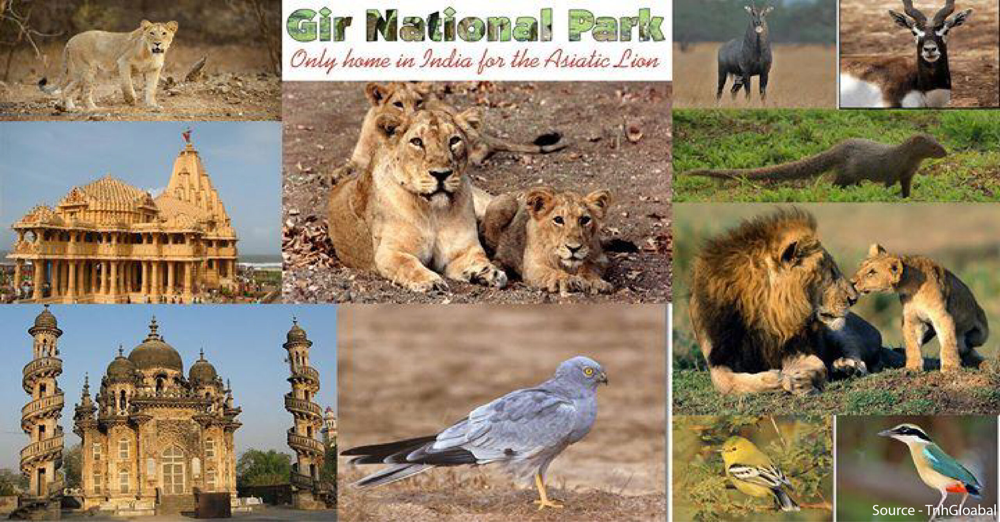
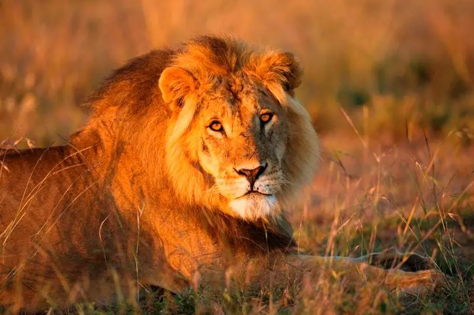
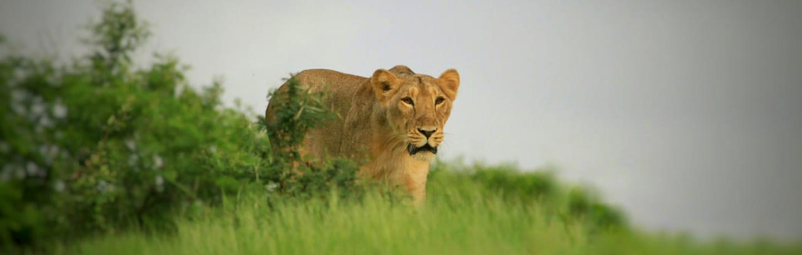
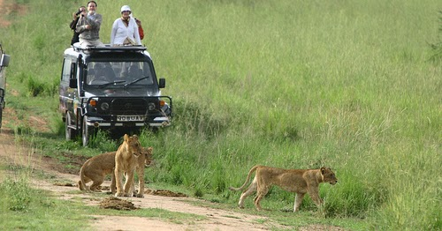
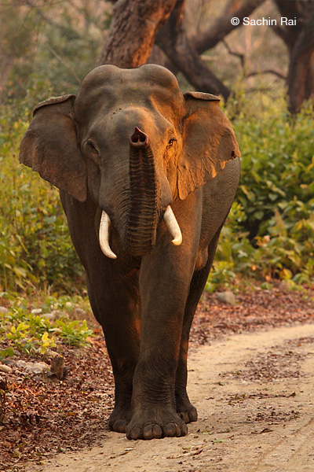

About
Welcome to the West India Wildlife Sanctuary. information about the Gir Forest Wildlife Sanctuary in West India: Gir Forest Wildlife Sanctuary, located in the state of Gujarat, is one of the most renowned wildlife sanctuaries in India. It's particularly famous for being the last abode of the Asiatic Lion (Panthera leo persica), a critically endangered species. .
Image Gallery





×

Contact Us
Email: thiru@westindiawildlife.com
Phone: +91 6357829163
Location
West India Wildlife Sanctuary,
Gir forest , India